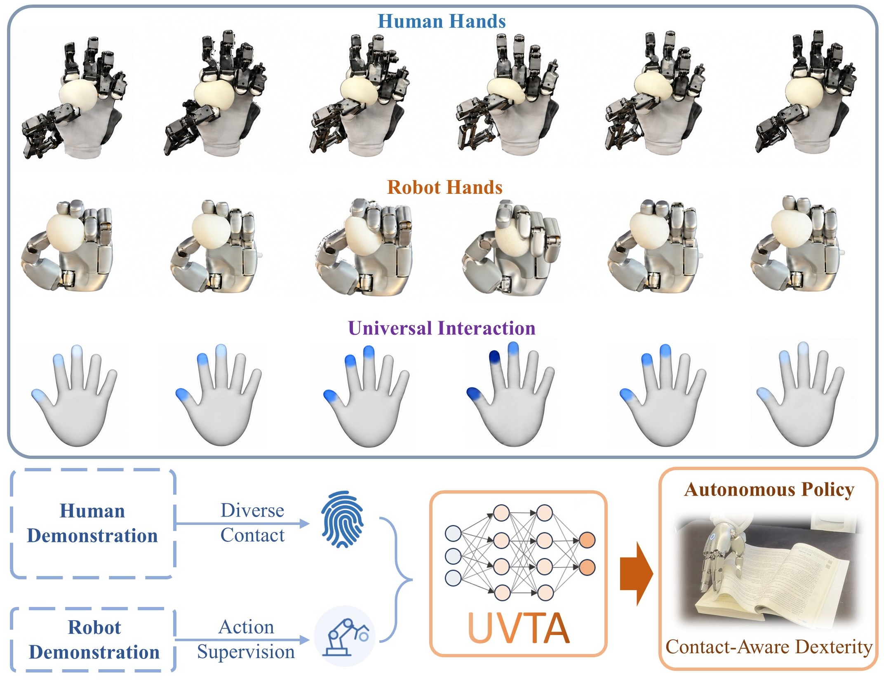

404-D interaction token
Connect wrist vision with contact measurements in a shared representation.
Dexterous manipulation from scalable human touch
Hands can change. The physics of interaction does not.
01 / Motivation
Learning across embodimentsDexterous manipulation needs touch. Collecting tactile demonstrations on robot hands, however, is difficult to scale.
Human interaction offers a scalable source of contact experience. UVTA combines diverse human tactile demonstrations with a smaller set of robot demonstrations to learn a shared visual–tactile–action representation.
Scale human contact experience to learn contact-aware robot manipulation.

02 / System and Dataset
From human interaction to training dataA passive 22-DoF exoskeleton synchronizes hand motion, fingertip pressure, wrist pose, and wrist-mounted RGB vision.


Human demonstrations broaden contact diversity. Robot demonstrations provide executable action supervision.
03 / Model
Unified Visual–Tactile–Action ModelingA 384-D visual token and a 20-D tactile token form a shared representation, trained through action diffusion and future-tactile prediction.

Connect wrist vision with contact measurements in a shared representation.
Generate 16-step chunks of relative wrist and absolute finger-joint actions.
Predict future touch to supervise contact-aware representation learning.
04 / Real-robot demonstrations
Task I / Page separation and turning
The robot approaches the book, slows down near the page, and coordinates its fingers to rub and separate a single page before turning it to the left.
Task descriptions follow the paper’s experimental setup. Touch panels show recorded sensor visualizations. Playback speed appears at the top right of the external view.
05 / Generalization Test
A separate demonstration of the page-turning task with colored lighting interference, shown with synchronized views and tactile feedback.
Lighting interference / Flip Page
The robot separates and turns a page while colored lights change the scene’s appearance. By relying on tactile feedback, the robot continues to complete the task reliably despite visual interference.
06 / Results
UVTA outperforms the strongest visual-tactile baseline by 41 points on average, while future-tactile prediction contributes a 28-point gain over its ablation.
| Method | Flip | Bulb | Switch | Ball | Liquid | Avg. |
|---|---|---|---|---|---|---|
| ViTacFormer | 0 | 4 | 0 | 0 | 0 | 1 |
| RDP | 10 | 20 | 20 | 18 | 0 | 14 |
| T-Rex | 43 | 26 | 24 | 36 | 15 | 29 |
| UVTA | 83 | 80 | 88 | 56 | 44 | 70 |

07 / Limitations and Future Work
The next scale of contact learningOur current system measures touch only at the fingertips. It does not capture contact across the palm or the rest of the hand.
We evaluate UVTA at a limited range of human-data volumes and model capacity. Its behavior at substantially larger scales remains untested.
Broader touch. More human experience. Larger models.